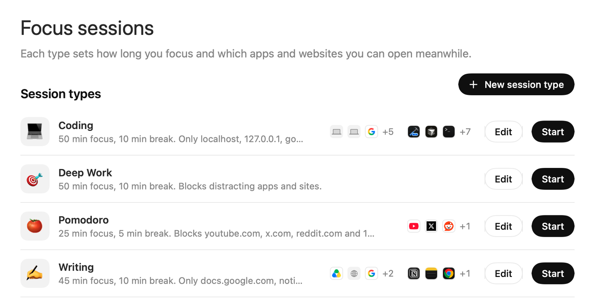
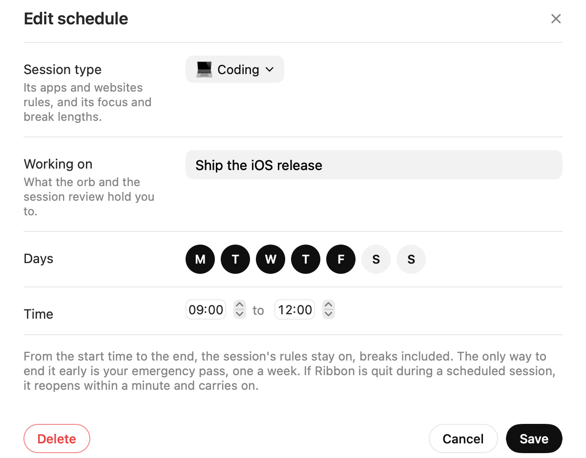
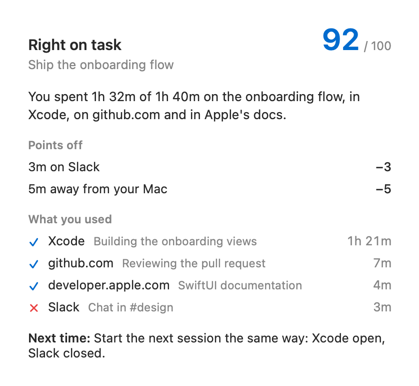
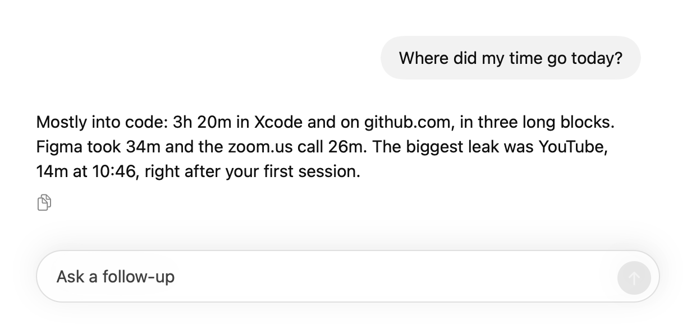

Block what you don't need
Each focus session decides which apps and websites you can open. Ribbon hides the rest until it ends.
Ribbon tracks the apps and websites you use, shows how you spent your day, and blocks distractions while you work. Tracking happens entirely on your Mac, and your data is stored only there.
Free and open source. macOS 14 or later, on Apple silicon and Intel Macs.
Focus sessions block what you don't need, a score tells you how each one went, and you can ask about your time.

Each focus session decides which apps and websites you can open. Ribbon hides the rest until it ends.

A session can start by itself, like 9:00 to 12:00 on weekdays. Its rules stay on until it ends, with one emergency pass a week.

When a session ends, Ribbon checks what you did against what you said you'd do, and tells you what cost you points.

Ask things like “Where did my time go today?” and get an answer from your own activity.
Ribbon tracks every app on your Mac. In Safari, Chrome, Arc, Brave, Edge and other Chromium browsers, it also sees which website you're on, so it can block sites too.
During a focus session, a small orb sits in the corner of your screen. Drift for more than a minute and it tells you, out loud. You choose how nice it is.
“That video looks fun, but your onboarding flow misses you. Back to it?”
“YouTube again. Fourteen minutes. You said you'd ship the onboarding flow today, not watch other people ship things.”
No account and no subscription. The code is on GitHub under the MIT license.
Download for MacYes. Ribbon is free and open source under the MIT license. The AI features run on your ChatGPT plan (Plus or Pro) or your own OpenAI API key, so any AI costs are between you and OpenAI.
Ribbon stores your activity on your Mac. When the AI is on, Ribbon sends app names, website names, page titles and totals to OpenAI, plus screenshots during focus sessions that watch your screen. Screenshots are never saved. If you add a Gemini API key for the orb's voice, what the orb says aloud is sent to Google to be turned into speech.
Yes. Tracking, the timeline, focus sessions, blocking and session scores all work without it. The AI adds smarter sorting into categories, written summaries, answers to your questions, and the orb's screen checks.
Ribbon sees which website you're on in Safari, Chrome, Arc, Brave, Edge and other Chromium browsers, so it can track and block sites there. In Firefox, it sees page titles only.
No. A scheduled session can't be paused or quit, and its rules stay on through breaks. Your emergency pass, one a week, ends it early. If Ribbon is force-quit during a scheduled session, it reopens within a minute.
Yes: brew install --cask lenajeremy/tap/ribbon. Ribbon needs macOS 14 or later, and works on Apple silicon and Intel Macs.